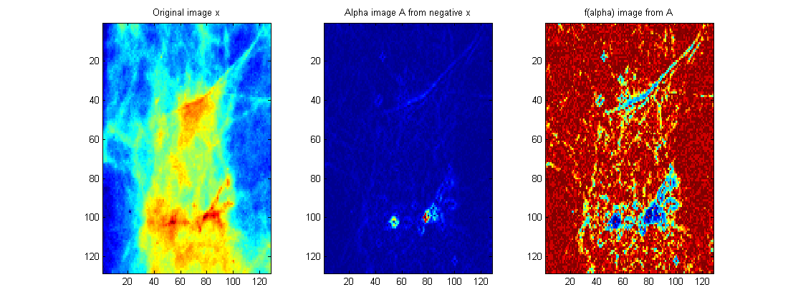
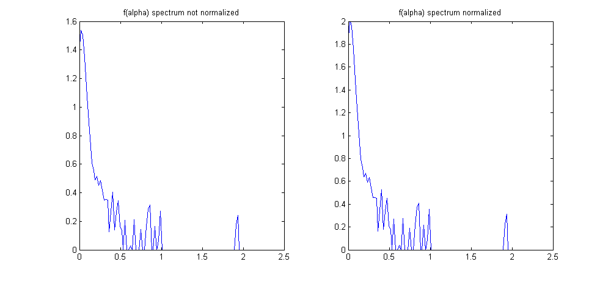

| FRACLAB Functions |
|
Computes corresponding f(alpha) image from an input alpha image. The function f(alpha) describes the global regularity.
NOTE: In the FracLab graphical interface this function is associated with the alphaimage function
and the spotted function.
F = falphaimage(a,na)
[F,fs] = falphaimage(a,na)
[F,fs] = falphaimage(...,'Action')
F = falphaimage(a,na) Estimates the f(alpha) image, F, of the input alpha image, a, using a specific number of bins, na. The parameter na is a positive integer which defines the discretization of a.
[F,fs] = falphaimage(a,na) Estimates f(alpha) image, F, and the f(alpha) multifractal spectrum, fs. The output fs is a structure
that contains the spectrum, fs.spec and the data corresponding to the alpha bins, fs.bins
|
The f(alpha) image |
[F,fs] = falphaimage(...,'Action') Estimates f(alpha) image, F, and the f(alpha) multifractal spectrum, fs, using a specific action. The supported Actions can be choosen from the list below :
| Specifier | Action Type |
|---|---|
| 'def' | Without normalization (default) |
| 'norm' | Normalization of fs.spec within (0:2) |
images_loc = which('falphaimage.html');
x = imread(fullfile(fileparts(images_loc),'images_examples','Segmentation','m213.pgm'));
x = ima2mat(x); A = alphaimage(x,2,'neg');
F = falphaimage(A,100);
figure; subplot(1,3,1); imagesc(x); title('Original image x');
subplot(1,3,2); imagesc(A); title('Alpha image A from negative x');
subplot(1,3,3); imagesc(F); title('f(alpha) image from A');

x = imread(fullfile(fileparts(images_loc),'images_examples','Segmentation','m213.pgm'));
x = ima2mat(x); A = alphaimage(x,2,'neg');
[F1,fs1] = falphaimage(A,100); [F2,fs2] = falphaimage(A,100,'norm');
figure; subplot(1,2,1); plot(fs1.bins,fs1.spec); title('f(alpha) spectrum not normalized');
subplot(1,2,2); plot(fs2.bins,fs2.spec); title('f(alpha) spectrum normalized');

[1] J. Lévy-Véhel, P. Mignot "Multifractal segmentation of images", Fractals, Vol. 2 No. 3, (2004) 379-382.
[2] T. Stojic, I. Reljin, B. Reljin "Adaptation of multifractal analysis to segmentation of microcalcifications in digital mammograms",
Physica A: Statistical Mechanics and its Applications, Vol. 367 No. 15, (2006) 494-508.
| |
estimOSC2DH | fbmlevinson | |